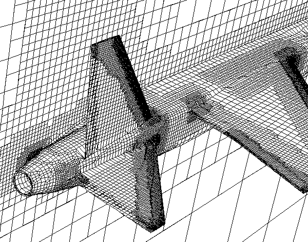

The ease of Cartesian or wrapper-based meshing for Computational Fluid Dynamics (CFD), including immersed boundary methods, is predicated on having a suitable surface mesh (e.g., STL) as an input. That surface mesh has certain constraints that, if not satisfied, will either cause a poor final mesh or can cause the Cartesian meshing process to fail.
CFD Cartesian MeshSource: Richard Smith EngD Thesis 1996


 Get our Blog feed
Get our Blog feed